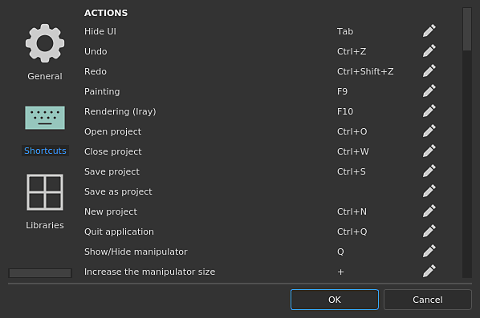
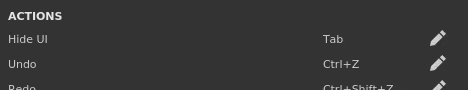

This page list all the keyboard and mouse shortcuts available.
For a quick overview of all the Shortcuts available, take a look at our graphic available in our tutorials .

To reset a shortcut back to its default value simply right-clicking on it.
| Action | Shortcut (Windows) |
Shortcut (MacOS) | Description |
|---|---|---|---|
| Hide UI | Tab | Tab | Hide all the docks/windows of the interface to maximize the viewport(s). |
Undo |
Ctrl+Z |
⌘+Z | Cancel the last action and go back to the previous state. |
| Redo | Ctrl+Y |
⌘+Y | Go forward in the action list, redoing the action that has just been cancelled. |
| Painting |
F9 | F9 | Switch the interface to the Painting mode. |
| Rendering (Iray) | F10 | F10 | Switch the interface to the Rendering mode. |
| Open project | Ctrl+O |
⌘+O | Open the file open dialog of the system to load a project. |
| Close project | Ctrl+F4 | ⌘+W | Close the currently opened project. |
| Save project | Ctrl+S | ⌘+S | Save the currently opened project. |
| Save as project | Save the currently opened project under a new name. | ||
| New project | Ctrl+N | ⌘+N | Open the new project creation window. |
| Quit application | Alt+F4 | ⌘+Q | Close the application. |
| Show/Hide manipulator | Q | Q | Toggle the display of the manipulator used to control fill layer transforms. |
| Increase the manipulator size | + | + | Make the manipulator bigger in the viewports. |
| Decrease the manipulator size | - | - | Make the manipulator smaller in the viewports. |
| Cycle through manipulation spaces | T | T | Alternate between Object and World space transformation for the manipulator. |
| Toggle warp edition mode | Shift+V | Shift+V | Switch between the Warp transform and Edit vertices modes when editing a warp projection. |
| Translate tool | W | W | Set the manipulator mode to translation. |
| Rotate tool | E | E | Set the manipulator mode to rotation. |
| Scale tool | R | R | Set the manipulator mode to scale. |
| Surface tool | Shift+W | Shift+W | Set the manipulator mode to snap on the 3D model surface. |
| Symmetry | L | L | Enable the symmetry along a given axis. |
| Pause engine computation | Shift+Escape | Shift+Escape | Toggle engine computations. |
| Select Paint tool | 1 | 1 | |
| Select Paint tool + Particles | Ctrl+1 | ⌘+1 | |
| Select Eraser tool | 2 | 2 | |
| Select Eraser tool + Particles | Ctrl+2 | ⌘+2 | |
| Select Projection tool | 3 | 3 | |
| Select Projection tool + Particles | Ctrl+3 | ⌘+3 | |
| Select Polygon Fill | 4 | 4 | |
| Select Smudge tool | 5 | 5 | |
| Select Clone tool (relative source) | 6 | 6 | |
| Select Clone tool (absolute source) | Ctrl+6 | ⌘+6 | |
| Bake Mesh Maps | Ctrl+Shift+B | ⌘+Shift+B | Open the Baking settings window. |
| Increase tool size | ] | ] | Increase the size of the brush for the painting tool. |
| Decrease tool size | [ | [ | Decrease the size of the brush for the painting tool. |
| Bake Mesh Maps | Ctrl+Shift+B | ⌘+Shift+B | Open the Baking settings window. |
| Invert grayscale tool | X | X | Invert the current grayscale value if the painting tool is on a mask. |
| Pick stroke material | P | P | Enable the material picker tool. |
| Lazy Mouse | D | D | Enable the lazy mouse behavior on the current tool. |
| Hide/ignore excluded geometry | Alt+H | Option+H | Hide 3D model parts that were excluded via the Geometry Mask. |
| Camera Perspective | F5 | F5 | Change the camera of the viewport to a Perspective view. |
| Camera Orthographic | F6 | F6 | Change the camera of the viewport to an Orthographic view. |
| Display next channel | C | C | Switch the viewport to the Solo view mode and display the next channel of the current Texture Set. |
| Display previous channel | Shift+C | Shift+C | Switch the viewport to the Solo view mode and display the previous channel of the current Texture Set. |
| Display material | M | M | Switch the viewport display mode to Material. |
| Display next mesh map | B | B | Switch the viewport to the Solo view mode and display the next mesh map of the current Texture Set. |
| Display previous mesh map | Shift+B | Shift+B | Switch the viewport to the Solo view mode and display the previous mesh map of the current Texture Set. |
| Toggle animation | Space | Space | Pause/Unpause animation of the particles if a particle projection is in progress. |
| Export textures | Ctrl+Shift+E | Shift+⌘+E | Open the export textures window. |
| Center the whole mesh | F | F | Center the whole mesh of the current project in the middle of the viewport. |
| Toggle quick mask edition | U | U | Enter/Exit the quick mask edition. |
| Clear quick mask | Y | Y | Disable and clean the quick mask. |
| Invert quick mask | I | I | Invert the current values of the quick mask. |
| Viewport layout 3D/2D | F1 | F1 | Change the viewport display to show both the 3D and 2D view at the same time. |
| Viewport layout 3D only | F2 | F2 | Change the viewport display to show only the 3D view. |
| Viewport layout 2D only | F3 | F3 | Change the viewport display to show only the 2D view. |
| Swap 2D / 3D view | F4 | F4 | Swap between 2D and 3D view in viewport and 2D UV view. |
| Texture Set isolate | Alt+Q |
Option+Q | Isolate the current Texture Set in the viewport by hiding the other. |
| Use tool / paint | Mouse left | Mouse left | |
| Draw straight lines | Shift+Mouse left | Shift+Mouse left | |
| Draw straight lines with snapping | Ctrl+Shift+Mouse left | Ctrl+Shift+Mouse left | |
| Camera rotate | Alt+Mouse left | Option+left | |
| Camera snap rotate | Alt+Shift+Mouse left | Shift+⌘+Mouse left | Snap camera rotation every 90 degrees angle. |
| Camera translate | Alt+Middle mouse | Option+⌘+Mouse left | |
| Camera translate (alternative) | Ctrl+Alt+Mouse left | ||
| Camera zoom | Alt+Mouse right | Mouse middle | |
| Stencil rotate | S+Mouse left | S+Mouse left | |
| Stencil snap rotate | Shift+S+Mouse left | Shift+S+Mouse left | |
| Stencil translation | S+Middle mouse | ||
| Stencil zoom | S+Right mouse | S+Right mouse | |
| Change tool Size / Hardness | Ctrl+Mouse right | ⌘+Mouse right | Change size by moving horizontally, change hardness of brush by moving vertically. |
| Change tool Flow / Rotation | Ctrl+Mouse left | ⌘+Mouse left | Change flow of current brush by moving horizontally, change rotation of brush by moving vertically. |
| Rotate environment | Shift+Mouse right | Shift+Mouse right | Rotate horizontally the environment map used for the lighting in the viewport. |
| Auto-Focus (Depth of Field) | Ctrl+Middle mouse | ||
| Texture set selection | Ctrl+Alt+Mouse Right | Option+⌘+Mouse right | |
| Context menu | Mouse right | Mouse right | Quick menu to access the properties window inside the viewport. |
| Set Clone tool source location | V+Mouse left | V+Mouse left | |
| Ignore stencil mask | N | N | Temporarily disable the stencil (avoid to remove it entirely). |
| Resume previous stroke | A | A | Allow to continue the previously created brush stroke to avoid discontinuities. |
Some shortcuts may only work if the mouse is over the specific window.
Example: copy and pasting requires that the mouse is over the layer stack.
| Action | Shortcut (Windows) | Shortcut (MacOS) | Description |
|---|---|---|---|
| Copy layer | Ctrl+C | ⌘+C | Copy the currently selected layer(s). |
| Cut layer | Ctrl+X | ⌘+X | Cut the currently selected layer(s). |
| Paste layer | Ctrl+V | ⌘+V | Paste the layer in memory(s). |
| Delete layer | Delete | Delete | Delete the currently selected layer(s). |
| Duplicate layer | Ctrl+D | ⌘+D | Duplicate the currently selected layer(s). |
| Group layer | Ctrl+G | ⌘+G | Put the currently selected layer(s) into a folder. |
| Copy layer content | Ctrl+Shift+C | Option+⌘+C | Copy the layer content (painting) and its effects. |
| Paste layer content | Ctrl+Shift+V | Option+⌘+V | Paste the content (painting) and effects currently in memory. |
| Display mask in viewport | Alt+Mouse left | Option+Mouse left | Switch the viewport display mode to the mask of the specified layer. |
| Disable/Enable mask | Shift+Mouse left | Shift+Mouse left | Toggle the state of the mask on a layer. |
| Drag & drop material | CTRL+Drag&Drop | ⌘+Drag&Drop | Press and maintain this key while drag and dropping a material (or smart material) into the viewport to only affect a specific part of the 3D model. |
| Manipulator constraint/snapping | Shift | Shift | Snap transformation when adjusting the manipulator (translation or rotation) in 3D View. Constrain ratio when adjusting manipulator in 2D View. |
| Manipulator mirror transformation | Ctrl | ⌘ | Mirror manipulator points transformation around its pivot point in 2D View. |